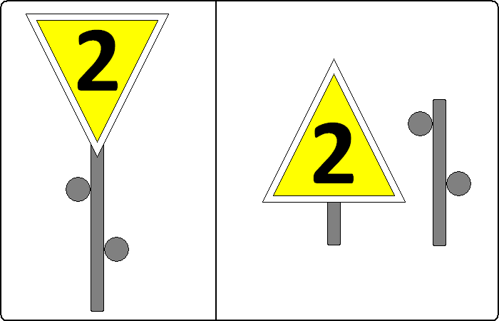
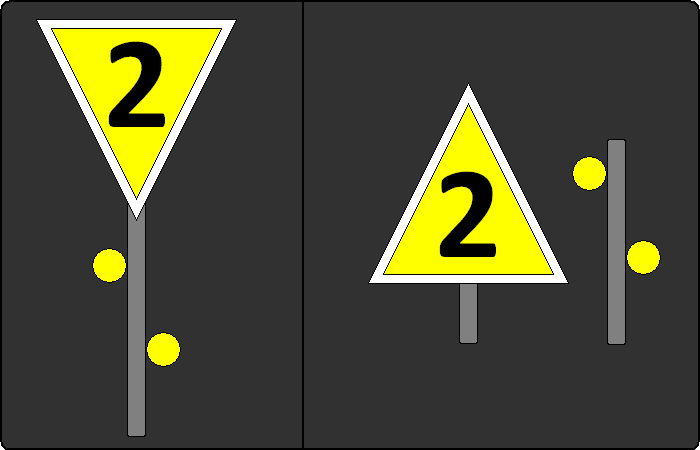
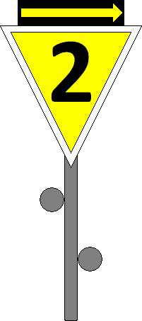

01
Bedeutung
Es folgt eine vorübergehende Langsamfahrstelle, auf der die angezeigte Geschwindigkeit nicht überschritten werden darf.
Signalbuch-Online
Übersicht und Beschreibung der vorübergehenden Langsamfahrstelle nach der Eisenbahn-Signalordnung (ESO).
Tageszeichen:
Eine auf der Spitze stehende dreieckige gelbe Scheibe mit weißem Rand zeigt eine schwarze Kennziffer.
Bei beschränktem Raum kann die Dreieckspitze nach oben zeigen.

Nachtzeichen:
Unter dem beleuchteten Tageszeichen zwei schräg nach links steigende Lichter.
Bei beschränktem Raum befinden sich die Lichter vor dem Tageszeichen.

Rückstrahlende Scheibe: Die gelbe Scheibe darf rückstrahlend sein; sie ist dann bei Anwendung des Nachtzeichens nicht beleuchtet.
Lampen: Die Lampen für die gelben von rechts nach links steigenden Lichter sind bei den Eisenbahnen des Bundes auch am Tage am Signal angebracht, sie werden jedoch nur bei Anwendung des Nachtzeichens beleuchtet.
Lichter bei beschränktem Raum: Die Lichter des Nachtzeichens sind bei beschränktem Raum bis zu 15 m vor dem Signal aufgestellt.
Beginnt eine Langsamfahrstelle nach einer Strecken- oder Fahrwegverzweigung, ist das Signal Lf 1 durch einen gelben Richtungspfeil mit schwarzem Rand ergänzt, um anzuzeigen, für welche Richtung die Geschwindigkeitsbeschränkung gilt.

Züge werden durch Befehl oder die La verständigt, für welche Richtung das Signal gilt.
Bei einem rückstrahlenden Signal Lf 1 muss auch der Richtungspfeil rückstrahlend sein.
Zum Öffnen der Galerie bitte Bild anklicken!